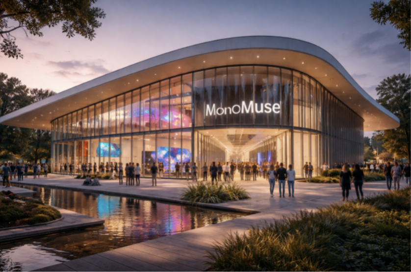

MonoMuse is dedicated to showcasing the intersecton of art and technology. The museum exhibits come together to create one, cohesive experience, inspiring visitors to learn more about arts and how technology can enable creative expression. The museum serves anyone who comes with an appreciation for the arts and an open mind.